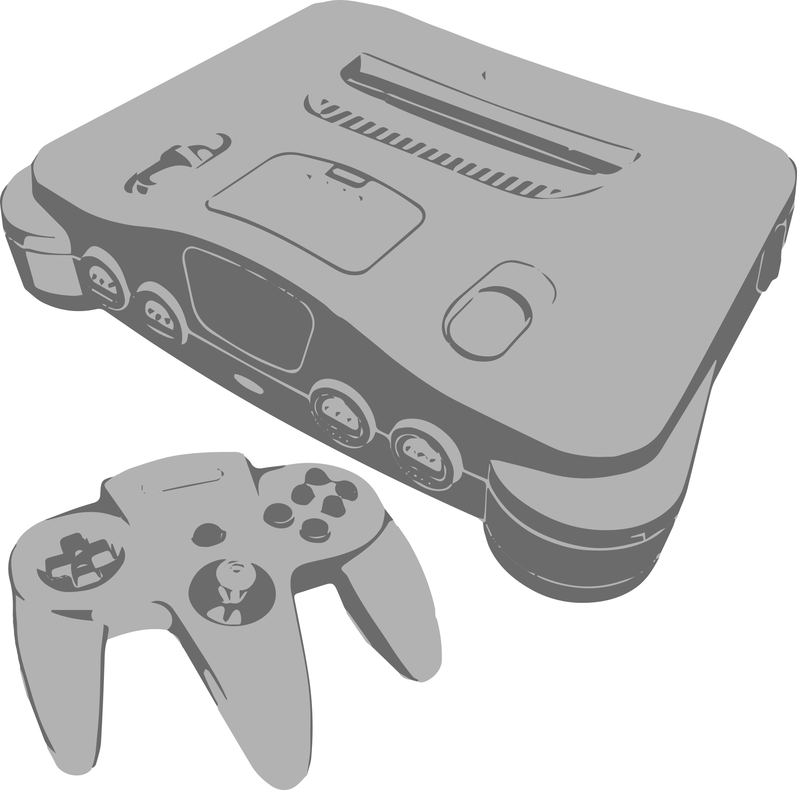

Nintendo 64
The Nintendo 64 (N64) is a landmark home video game console released by Nintendo in 1996. Named after its 64-bit processing architecture, it represented Nintendo's bold leap from 2D sprites to full 3D graphics, revolutionizing how players navigated virtual worlds.
Key highlights of the Nintendo 64 platform:
Analog Precision: Introduced a revolutionary trident-shaped controller equipped with a central analog Control Stick, enabling precise 360-degree movement in 3D environments.
Built-in Multiplayer: Featured four built-in controller ports out of the box, popularizing split-screen local multiplayer gaming.
3D Game Benchmarks: Set new industry standards for game design with groundbreaking titles like Super Mario 64, The Legend of Zelda: Ocarina of Time, GoldenEye 007, and Mario Kart 64.
Cartridge Format: Stood out during the fifth console generation by continuing to use ROM cartridges rather than CD-ROMs, trading higher storage capacity for virtually zero load times.